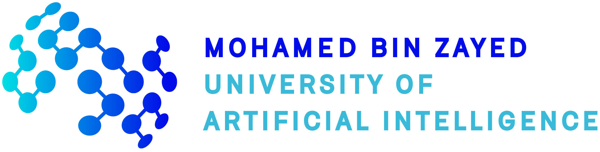
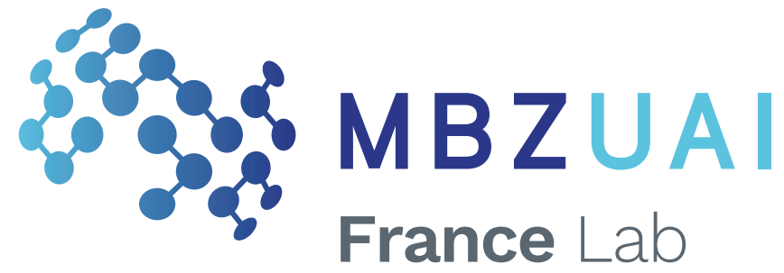

MBZUAI Workshop 2025:
Foundations and Advances in Generative AI:
Theory and Methods
Foundations and Advances in Generative AI:
Theory and Methods
February 12-13, 2025
Paris, France
Paris, France
| Home | Speaker List | Program Day 1 | Program Day 2 |
We are pleased to announce the MBZUAI Workshop 2025 on Foundations and Advances in Generative AI: Theory and Methods, organized by the Machine Learning Department of Mohamed bin Zayed University of Artificial Intelligence (MBZUAI) in collaboration with the MBZUAI France Lab.
This workshop aims to foster collaboration and accelerate progress in the machine learning aspects of large language models (LLMs) and multimodal model research. We will bring together leading experts to discuss cutting-edge techniques, share research findings, and identify key challenges and opportunities.
We invite contributions on topics broadly related to machine learning for large models. Key areas of focus will include:
• Development of novel ML architectures for large model training and inference
• Addressing bias and fairness in large model training data and output
• Techniques for interpretability and explainability of large model behavior
• Representation learning for large multimodal models
• Mitigating risks and ensuring safety in large model development
• Scaling and efficiency considerations for large-scale model training
• Application domains including bio/medical and others
Scheduled for February 12–13, the program includes:
Invited Talks: Two days of presentations by leading experts on cutting-edge machine learning and generative AI advancements.
Panel Discussions: Interactive sessions addressing challenges in learning with large models, including scalability, interpretability, and ethics.
Poster Session: A platform for researchers to showcase their work. To present a poster, please fill out the Google form for review.
Join us for insightful discussions and networking opportunities in this rapidly evolving field!
Organizing committee:
Eric Moulines, Ecole Polytechnique & MBZUAI
Guokan Shang, MBZUAI France Lab
Michalis Vazirgiannis, Ecole Polytechnique & MBZUAI
Kun Zhang, MBZUAI
Logistics support:
Georgia Dimopoulos, MBZUAI France Lab
Brenda Ward, MBZUAI
|  |  |
The workshop will take place at Fondation François Sommer, 60 Rue des Archives, 75003 Paris, France.